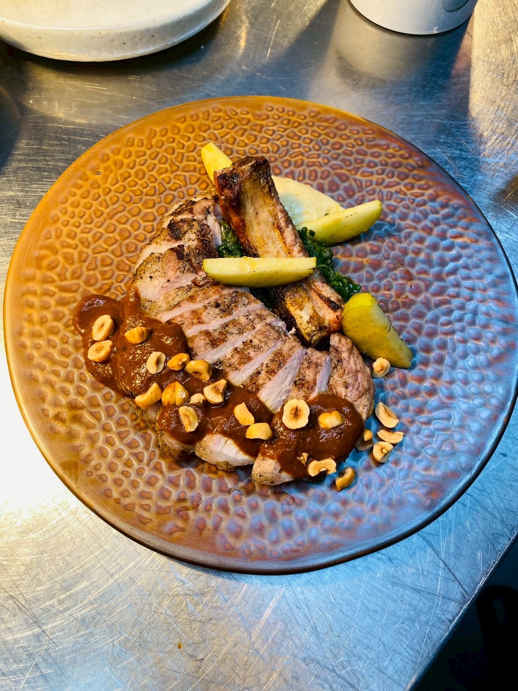
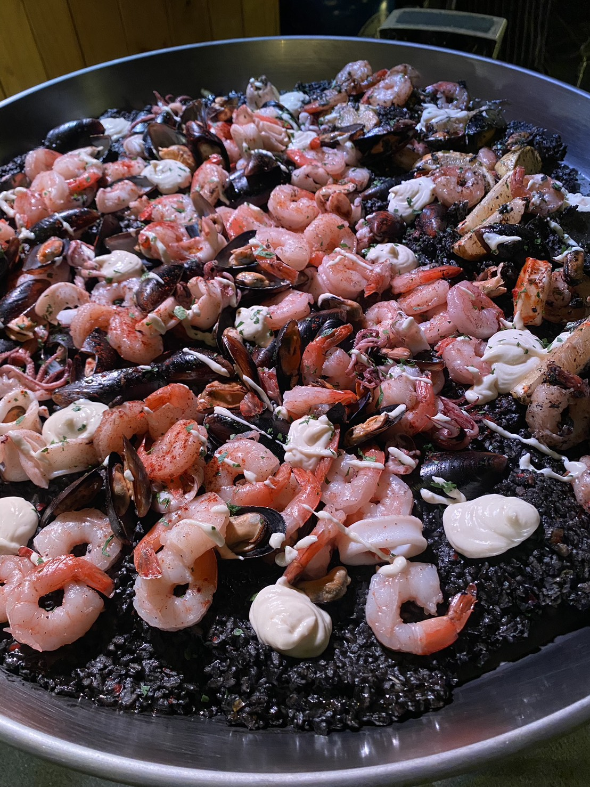
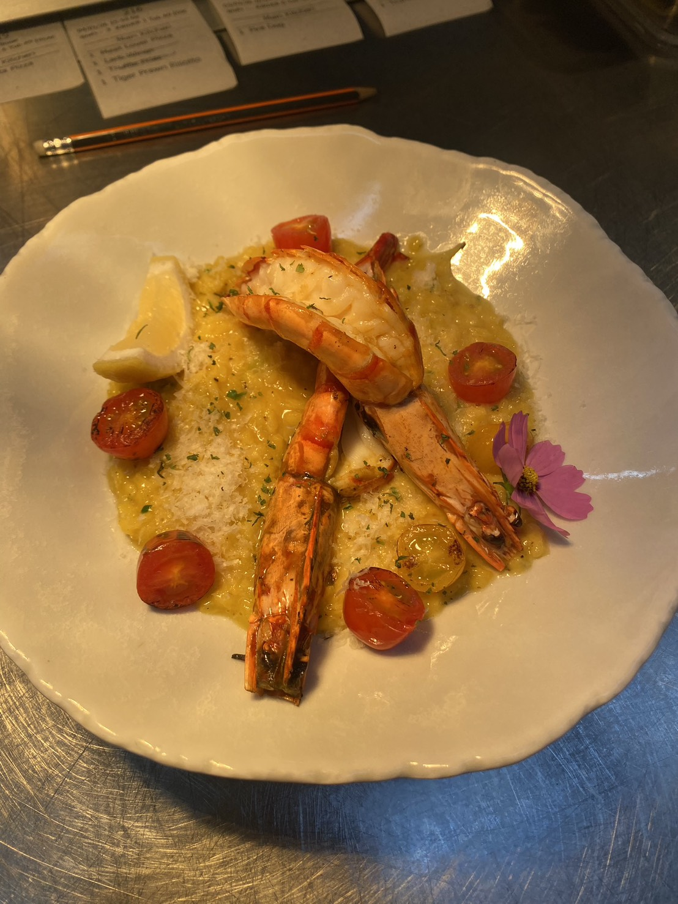

ผมไม่ได้เริ่มเขียนโค้ดเพราะอยากทำเว็บสวย แต่เริ่มเพราะเห็นว่ามีงานในร้านอาหารหลายอย่างที่ยังต้องนั่งไล่เช็กเองทุกคืน
ผมยืนอยู่ทั้งสองฝั่ง ฝั่งหน้างานที่ต้องตัดสินใจเร็ว และฝั่งระบบที่ต้องคิดเป็นโครงสร้าง นั่นคือเหตุผลที่ผมออกแบบเครื่องมือให้ใช้ง่ายภายใต้แรงกดดัน ไม่ใช่ dashboard ที่เพิ่มงานให้ทีม
ตอนนี้ผมโฟกัส Automation, AI Agents, Restaurant Tech และ Micro-SaaS เพื่อทำงานร่วมกับเจ้าของร้านที่อยากเปลี่ยน pain point ในแต่ละวันให้กลายเป็นระบบที่ใช้ได้ยาว



3+
ปีในครัวร้านอาหาร
Food
Restaurant Tech
Auto
Automation First